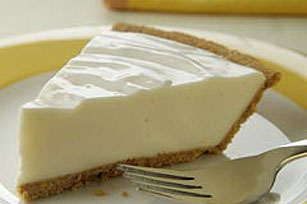

<!--New ion view and content to hold template-->
<ion-view>
<ion-content>
 
 <br/>
 <br/><!--line breaks-->
 <br/>

<!--button which links back to the home menu and styling-->
 <div>
  <button class="button button-dark" ui-sref="tabs.home">
    Back to home
  </button>
 </div>

<!--div which holds an image of the food info is being given about, along with height and width attributes-->
  <div>
  
 </div>

 <!--Form controlled with radio buttons containing different calory sizes for portions, using controller-->
 <form name="FoodForm">
  <input type="radio" ng-model="portion.size" value="160">Small Portion <br/>
  <input type="radio" ng-model="portion.size" value="410">Medium Portion <br/>
  <input type="radio" ng-model="portion.size" value="934">Large Portion <br/>
  <tt>Calories = {{portion.size | json }}</tt><br/><!--output with controller-->
 </form>

</ion-content>
</ion-view><!--close ion view and content-->
